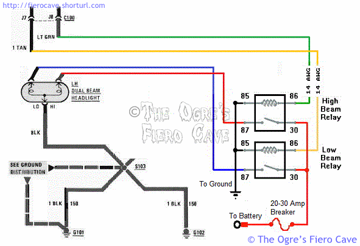
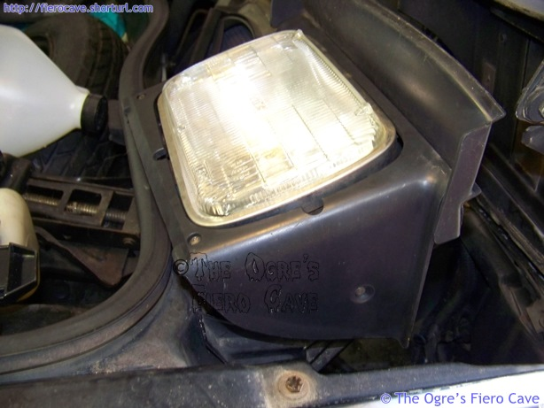
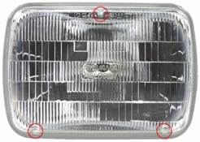
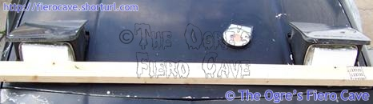
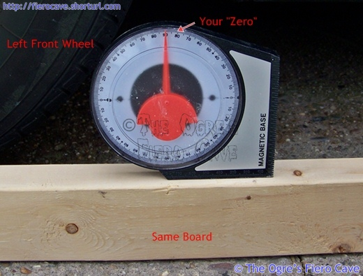
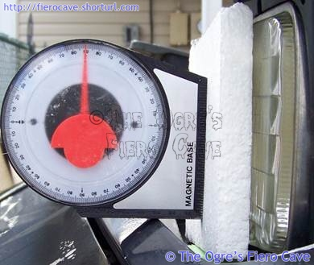
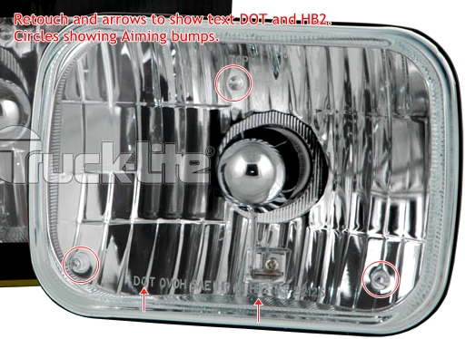

Go Home
Site Map
Go Home
Site Map
Light it up!
I've seen a number of articles over the years in the press and received a number of questions about this one. "How do you know if your headlights are aimed right?" "How do you aim them if they are off?" "Is there an easier way to change Fiero lamps?" "What is the best type of headlamp?"
Using Fog or Driving lights? Correct wiring plan legal in all States.
Headlights are dim, flashing, even dead?
Dim Headlights
Note: Many Aftermarket HL Bulbs use 55w low beam. Make sure the wiring etc are in good shape before you install them.
Fiero Stock headlight bulbs are Halogen, the H in H6054, but only 35w on Low Beam and is true that old bulbs can reduce light output. Hours of running cause soot and other problem. New Halogen lamps does wonders...
Before you simply replace the lights and think that's all, you need to make sure the wiring and grounds are good. As stupid and obvious as this may sound, it's the second most common cause of lighting problems. Only headlight aim problems out number it. No headlight will perform properly if the wiring is hosed.
I think one problem is people don't realize how much power the headlamps use. Most of them draw 3-6 amps per filament... 65w/12.8v=5.1a, 55w/12.8v=4.3a & 35w/12.8v=2.8a (12.8v is the standardized test voltage for HL per FMVSS 571.108) This makes the headlights one of the biggest power consumers in the car.
In Fiero the two lamps draw 6 to 11 amps depending on low or high beam. They fall between the AC clutch coil and the electric radiator fan in terms of power consumed. In cars with 4 high beams, the set draws over 20 amps on high beam. That's a hell of allot of power.
What this means is that the headlamps are very sensitive to voltage drops in crappy wiring. Since the lights are on the other end of the car from the engine, you have even more places for problems.
Power or Ground Problems
Inspecting and cleaning the lamp connector. Don't remove the grease from the connector without replacing it. The grease keeps the connector from corroding. You can use regular dielectric grease in them. If needed, you can release the terminals from the shell by inserting a thin blade or wire into the front of the shell.
Next find G101 and G102 on the front compartment harness. These two grounds are used for almost every circuit in the front compartment. If they are bad it will affect headlight performance. Other lamps will also be affected but it's not usually as obvious as dim headlights. These grounds are located on either side of the radiator on inner fender and can be nasty to get at.
You've also got to check fuse link B, power and ground connections in the engine bay. Read the Wire Service article.
My HL Switch gets Hot or HL are Flashing
HL switch has a thermal circuit breaker for HL circuit that can cause the headlights to flash. (Tail lights uses a fuse in that circuit.)
Some think HL getting warm/hot is normal operation... Really is a major problem. Primary Symptom of bad wiring and/or switch contacts. High watt, often illegal, HL bulbs can cause this but normal bulbs can cause problem too.
Replace HL switch and fix the problem make the breaker hot.
If HL switch is bad then check beam switch too. Very good (bad?) odds that both switches are dieing/dead.
Don't overlook the high/low beam switch.
In most cases this thing lasts the life
of the car but they can go bad. Beam switch is on left side of Steering Column.
Switch may look fine but if plastic between the switch's pins or on the socket have turn color then better to get a new one.
Two quick test:
- Turn on the HL, wait a minute or two, and carefully check wires at beam switch socket. (Test both beams.) If wires are very warm to hot then beam switch bad. This is cause by too much resistance in the switch's contacts. Check socket too... Bad switch can cause weaken the connections in the socket to. Try Dorman for a new socket.
- Pull the connector off and by pass it with a jumper. If the lights are now brighter then the beam selector is worn out.
More/better Power?
Fiero system is 25+ years old and fixing all problems can be very hard to do. Bypassing the OE switches and wiring with relays is a good option. (Still need to fix grounds etc.)
Example, See Upgrading Headlights For Your Third-Generation F-Body It covers one method using relays though you might need heavier wiring or 30amp fuse depending on your setup. Suggest you use a Circuit Breaker like AC or Power Windows systems.
If the front compartment wiring is good then you can splice in the relays and just get a new power feed from the battery or main terminal under C500. New wire to the relays should be 10-12 awg with its own breaker. Make sure the fuse/breaker is weather-proof!

Source: Link above splice into GM Fiero Service Manual
Is there an easier way to change Fiero headlights?
Yes there is. Look down at the lifting linkage under the headlamp. Take out the pivot bolt on the headlight end of that link. (You need a T30 Torx™ bit.) Taking out that bolt lets you carefully flip the light carriage over so it's very easy to work on. I cut headlight change time to minutes doing this.
Unplug HL Motor. <-- Very important for Gen 1 motors! Gen 2 doesn't care.
Unplug HL bulb.
Loosen the HL motor to unload the bucket.
Remove 1 bolt at the link connects to HL assembly.
{kind=link}
Carefully Flip up the HL assembly to remove the trim and HL chrome. (Trim does touch the hood and door.)

Replace the bulb.
Put pieces back.
Done.
{kind=link}
My aiming screws are broken stripped or seized
You can get these thru any parts store. They are in DORMAN's red HELP!
packaging, PN 42161.
If the "locking ears" won't fit the hole because plastic is stiff... Just carefully use butane lighter to warm up the ears.
The ears are made to lock into sheet metal.
Broken locking ear? Don't worry. Ears doesn't affect function. Spring tension keeps the screws tight all the time.
Ok, How do you handle aiming?
This is a real problem on the majority of cars with sealed beam type headlights. It's not really hard to get them right. Just takes a bit of time and "tools" you can make yourself.
First off, Let's define what a headlight aim is. Properly aimed headlights are "square" to the ground vertically. They are also parallel to each other and the car's centerline horizontally.
"But the front of the lamp isn't flat! How do you square a sphere?" Look at the front of the lamp. See 3 little tabs sticking out, marked with red circles. The tips of those 3 tabs create a flat plane in space. It's that plane, not the front of the lamp, which is actually used to aim the beam pattern.

The poor man's headlight aimer
This method works when you are tight on space, unleveled pavement, etc. Use Web Search to find other methods.
Warning! This procedure may not work properly or at all after a front-end collision. After any kind of front-end accident you should use a professional lamp alignment system. Even if the lights were not hit directly, any damage that has been transmitted to the headlight hardware and supporting body/frame will usually make aligning the lamps impossible using the methods below.
You need:
- 2 pieces of plywood big enough to hit all 3 tabs on the lamp but not so big they hit things near the lamp. (I used rigid foam pieces.) If the lamp face is curved too much for the plywood to hit all 3 tabs then glue small blocks to the plywood. Make sure all 3 blocks are the same thickness. The plywood and any needed blocking must only touch the 3 tabs.
- A level. The best is dial level.
- A long straight edge. (I used 2x3 board.)
Horizontal Aim:
You may need help with this but only because there are too many things for one person to hold still. This is really easy on Fiero because no grill blocks access to the lights. (2x3 stay put by itself.)
Put both the plywood tools you made against the headlights and hold the straight edge against them.

Adjust the horizontal screw until both light's tabs are flat against the plywood and straight edge.
This step has taken care of both the lamps being parallel to each other and the car centerline.
Vertical Aim:
Park the car on as smooth & level a surface as you can find. This will work best on concrete or black top.
Lay the level on the ground in line with the car. Look carefully at the pointer and don't forget where it lines up. This step is important. It compensates for any slope of the ground.

Put the plywood tool against the 3 tabs on the lamp and the level vertically against the plywood.

Adjust the lamp until the dial matches where it was on the ground. (A tiny bit down is OK but anything above level is bad.)
The lamps should now be very close to their designed alignment. If you still don't like the beam pattern then it's the lamps themselves that are your problem. Try another brand/type of lamp, as each is different. There can be radical differences from one lamp brand/type to another. This is why it's important to replace headlamps in pairs whenever possible.
Is there a 'Best' headlight?
Warning: Using Brighter lamps can mean added Amps but bad aim or wiring is still bad and degrade wiring gets worse. Bad wiring can cause a melt down and even a fire.
The first thing to keep in mind about headlights is "brighter isn't always better." The illumination pattern of the light is actually the most critical part of what makes a good lamp. If the pattern is poor then the brightness of light will not make much difference. Those super bright jobs allot of people use are simply the same lame light patterns as most OEM lights with brighter bulbs stuffed in them. Worse they often do nothing but increase glair to oncoming drivers. (Many of these lamps are illegal for street use in most states.)
But is there a Best light?
Nope. Best is entirely a personal opinion. My best may stink for some people.
I like the most is Philips "Hi Visibility" but they stopped making any Seal Beam bulbs. These lights provide an incredibly well laid out low beam pattern with a good high beam. In most driving, where you almost never use high beam, this is very important. I consider this the "Best Lamp" for my driving conditions as most other lamps I've seen have very poor & dim low beam patterns. By redesigning both the lamp and the lens Philips has created a product that delivers much better lighting at the same wattage as OEM lamps.
Sylvania's XtraVision is good because the bulb puts out more light (Low Bearm is 55w vs OE 35w) and has long life. SilverStar and others are brighter still but last 1-3 years depend how much you drive at night. When you have DRL using Low Beam then short life can matter even more.
Upgrades?
Note that some States may not be legal to replace H6054/2B1 lamps with HB2 or LED but most hopefully will see DOT markings and stop at that.
Any upgrades without DOT markings can fail inspection. Cops can give you a ticket for illegal lighting or worse when done with stopping you.
H4 HB2
Is a lot of confusion when H4 housings and bulbs are legal to use or not. Very short story:
- Many H4 parts are illegal in most states because Housing doesn't have DOT labels and/or Bulbs uses too much power = bulbs are too bright. Bulbs using 100/55 watts, 100/80 watts, etc, are only for H4 and not legal even though they will fit HB2 housings.
- Some H4 parts are also HB2 and meet DOT rules. Both housings and bulbs must meet FMVSS 108 or is not street legal in many states.
The housing and bulb should be labeled:
- The
Housing will have DOT HB2 on the front and have aiming bumps/points same
as H6054.
Example: Truck-Lite P/N 27009 (Click picture to show full size.)
 - Bulbs will have HB2/9003 stamp in the base and are legal at 65w high and 55w low. (9003 is the trade number for HB2 bulbs.)
{kind=link}
Performance
9003 bulbs only list 55w for low beam... Sylvania, Hella, Donsbulbs.com, etc, all list 9003 60-65w high and 55w low.
Standard H6054 bulbs are 35w for low beam but you can get 55w low beam under many brands.
If comparing SilverStar in both types... Likely won't see much improvement in light output but the HB2 housing could change the light pattern vs. H6054.
Lifetime
Many 9003 and H4 bulbs have a short life and is same issue using SilverStar and others H6054 bulbs. If you drive at night allot then expect to change them often.
Example: From Sylvania own FAQ: "The average life of SilverStar® headlights is approximately one year." And that is at the bottom of FAQ. Now look at Sylvania 9003 specs. Most are 150 hr low beam, 50 hr high beam. Only EcoBright and Standard gets better lifetime. That is advertise lifetime. You may get longer or shorter life... Read bulb life at donsbulbs and How long do headlights last? at howstuffworks.
Hella and many others are in the boat. Some vendors list Hella 9003 lamp at 175 hr life for low beam. Higher wattage bulbs have even shorter life.
LED
Yes, DOT legal LED Headlights and have aiming points same as H6054. I think LED "bulb" label is DOT VOR or DOT SAE HL xx (xx is first year made) depending on design.
NHTSA requires LED to use Series wiring. This means that If just 1 LED dies then that lamp will go dark. You need very good warranties for using LED HL for the price. (An interesting NHTSA letter that cover this.)
LEDs for Headlamps and other applications do generate Heat and needs heatsink etc. Without enough airflow over the Heatsink the LEDs will quickly fry and die. This is why many LEDs and CFLs at home won't last long in closed fixtures.
Can I use LED or HID in HB2 housings?
Please don't try this. Many vendors will sell this but so many problems. A few examples:
- Likely illegal in most states.
- Change the "bulb" design affect focus of reflectors and lens. That affects light output and pattern, often in bad ways.
- Many will cause glare to other drivers, even to you trying to drive in bad weather. Is a good reason you use low beam HL to drive in fog, rain, etc.
- LEDs need big heatsink that needs air flow and causing clearance issues.